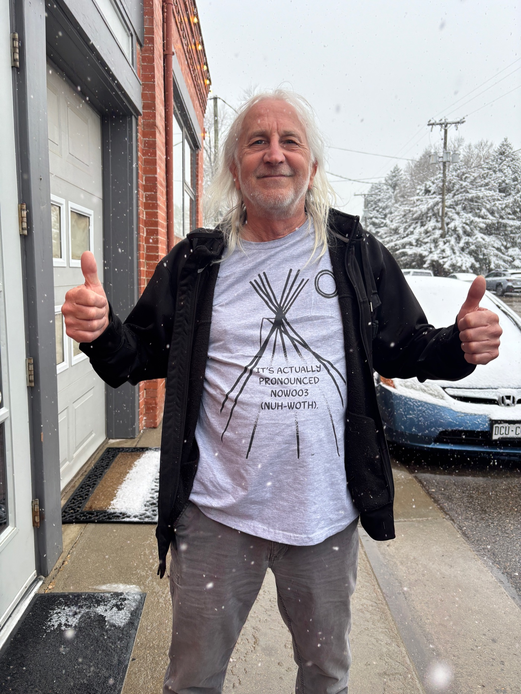

Get Involved
Help us build this.
The Niwot Film Festival is a community event in the fullest sense. There are several ways to be part of it from the beginning.

Volunteer
We need local volunteers for the ten-day run — greeters, venue staff, filmmaker liaisons, and tech crew. Volunteers get standby access to all screenings and an exclusive mixer with visiting filmmakers.
Sponsor
Support a programming track, sponsor the shuttle bringing festival-goers from Boulder, or "Adopt-a-Film" — sponsor a single screening and get a shout-out before the movie and a mention in the program. Every dollar stays local.
Founder's Club
Join the Founder's Club with a donation of $500–$1,000. You'll receive VIP badges, opening night tickets, and a commemorative print — and you'll be part of making this happen from day one.
Local businesses
Offer badge-holder specials, host a filmmaker Q&A, or open your space for an after-hours event. The festival is good for Niwot — and we want Niwot businesses to feel that directly.
Get festival updates.
Programming announcements, ticket news, and volunteer calls will go out by email as the festival takes shape. Drop us a line to get on the list.